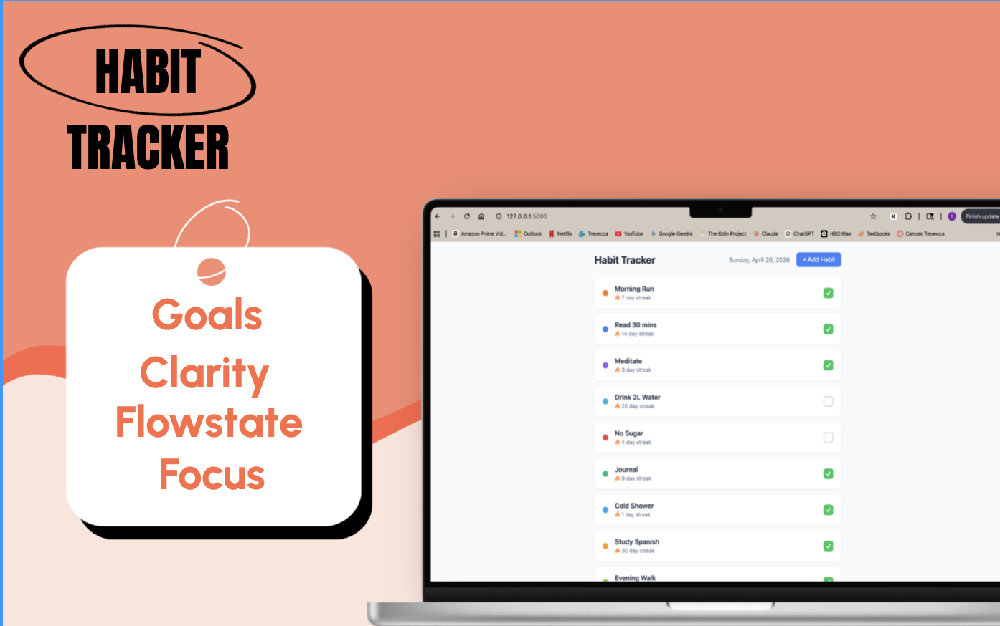

Overview
Habit Tracker is a full-stack web application that lets users build daily habits, check them off each day, and track progress through streak counters. Built from scratch using Python, Flask, SQLite, and vanilla JavaScript, with no frameworks, no external UI libraries, and no deployment server required.
The goal was to build something real: a working product with a database, a REST API, a tested backend, and a functional frontend, all connected and running together. The project started with a written spec before any code was written and used test-driven development for the algorithmic core.
Today View
Every habit with a color-coded dot, current streak count, and a checkbox. Clicking logs the habit as complete; clicking again undoes it. The streak updates immediately.
Detail Modal
Clicking a habit opens current streak, longest streak, and full completion history. Edit and Delete buttons included.
Add / Edit Modal
Create or update a habit with a name, optional description, and a color picker. All data persists in a local SQLite file.
Tech Stack
Architecture
Three key decisions shaped the design:
- Single-page, API-driven frontend. Flask serves one HTML file. After that, everything is
fetch()calls. No full-page reloads, no Jinja templating for data. The frontend is fully decoupled from the backend. - Pure functions for streak logic.
streaks.pytakes a list of date strings and returns an integer with no database calls, no side effects, no dependencies. This made it trivially testable and kept the algorithmic logic isolated from the web layer. - Database-level constraint enforcement. A
UNIQUE(habit_id, completed_date)constraint makes it physically impossible to log the same habit twice on the same day. The database enforces the rule, not the application code.
The Streak Algorithm
The most interesting engineering problem in the project. A naive approach of counting all completions gives the wrong answer: a habit logged 100 times over two years but not at all this month should have a streak of 0, not 100.
Longest streak is a separate function that scans the entire history for the longest consecutive run, correctly handling gaps of any size.
REST API
7 endpoints, all returning JSON with appropriate HTTP status codes:
| Method | Route | Description |
|---|---|---|
GET |
/api/habits |
All habits with today's status and current streak |
POST |
/api/habits |
Create a habit |
PUT |
/api/habits/<id> |
Update name, description, color |
DELETE |
/api/habits/<id> |
Delete habit and all its history |
POST |
/api/habits/<id>/complete |
Log today as complete |
DELETE |
/api/habits/<id>/complete |
Undo today's completion |
GET |
/api/habits/<id>/stats |
Current streak, longest streak, full history |
Testing
25 tests total, all passing.
-
14 unit tests (
test_streaks.py): test the streak functions in complete isolation. No Flask, no database, no HTTP. Just Python functions called with inputs. Covers empty history, single entries, consecutive days, gaps, duplicate dates, and longest-streak tracking. These run in milliseconds and never touch the filesystem. -
11 integration tests (
test_api.py): test the full stack from HTTP request through Flask route to SQLite and back. Each test runs against a fresh temporary database, deleted after the test. Covers habit CRUD, completion toggling, idempotency of double-completion, thecompleted_todayflag, stats endpoint, and 404 handling. - Test-driven development for the streak module. Tests were written first and verified to fail before the implementation was written. This forced thinking about edge cases (duplicate dates, "streak alive if today not logged") before any code existed. Tests written after-the-fact tend to only cover the happy path.
Frontend
The entire frontend is a single JavaScript file (~130 lines) with no framework,
no build step, and no node_modules.
The HTML file is a static shell with no data. JavaScript fetches from the API on load
and after every action, rebuilds the DOM via innerHTML,
and re-attaches event listeners after each render.
This is the same pattern React and Vue use, just without the framework. Writing it by hand made the data flow explicit and visible, and required solving problems that frameworks typically abstract: event delegation on dynamic elements, XSS prevention on user-provided content, and state management via API round-trips.
Challenges & What I Learned
- Streak counting is a backwards traversal problem, not a counting problem. The insight that you walk backwards from today rather than forwards from the first entry is the key to getting it right. Designing this upfront in the spec prevented a re-write mid-project.
- Pure functions are easier to test. Moving streak logic into its own module with no dependencies made it possible to write 14 focused tests in minutes. If that logic lived inside a Flask route, you would need a running server to test any of it.
- Database constraints as business rules. The
UNIQUEconstraint enforces correctness everywhere automatically. It cannot be bypassed by a bug in application code, and it does not need to be re-implemented in every layer that touches the data. - Flask blueprints and SQLite context managers. Splitting routes across files via blueprints keeps each module focused. Using
with get_db() as conngives automatic commit/rollback without manual transaction management. - XSS prevention in vanilla JS. Any user-provided text injected via
innerHTMLmust be escaped. If someone names their habit<script>alert(1)</script>, the app should display that text, not execute it.